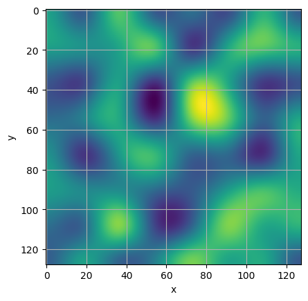
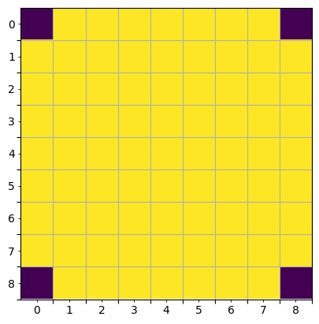
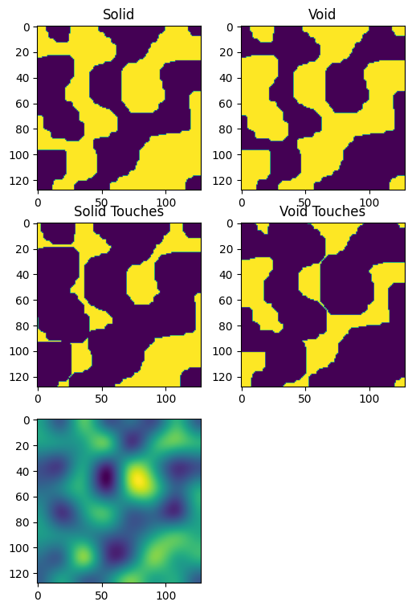

import numpy as np
import scipy.ndimage
import matplotlib.pyplot as plt
import timeNaive Generator
A generator that implemented based on
scipy.ndimage
Generating a latent space representation
To make it more “understandable” where material is placed we generate a slowly varying landscape by interpolation of a low resolution map.
features = 8
zoom = 16
heatmap = np.random.random((features,features))-0.5
large_heatmap = scipy.ndimage.zoom(heatmap, zoom)
plt.imshow(large_heatmap)
plt.xlabel("x")
plt.ylabel("y")
plt.grid()
Generating the brush
kernel_size=9
brush = np.ones((kernel_size, kernel_size))
brush[0,0] = 0
brush[0,-1] = 0
brush[-1,0] = 0
brush[-1,-1] = 0
nx, ny = brush.shape
plt.imshow(brush)
ax = plt.gca()
ax.set_yticks(np.arange(nx)+0.5)
ax.set_yticklabels(["" for i in range(nx)])
ax.set_xticks(np.arange(ny)+0.5)
ax.set_xticklabels(["" for i in range(ny)])
ax.set_yticks(np.arange(nx), minor=True)
ax.set_yticklabels([f"{i}" for i in range(nx)], minor=True)
ax.set_xticks(np.arange(ny), minor=True)
ax.set_xticklabels([f"{i}" for i in range(ny)], minor=True)
plt.grid()
Running the Generator
def dilate(img, brush):
global time_dilate
time_dilate -= time.process_time()
dil = scipy.ndimage.morphology.binary_dilation(img, brush)
time_dilate += time.process_time()
return dil
def existing_pixels(touches, brush):
return dilate(touches, brush)
def impossible_touches(existing_other, brush):
return dilate(existing_other, brush)
def valid_touches(impossible, touches):
return np.logical_and(np.logical_not(impossible), np.logical_not(touches))
def possible_pixels(valid, touches, brush):
possible_touches = np.logical_or(touches, valid)
return dilate(possible_touches, brush)
def required_pixels(existing, possible_other):
return np.logical_and(np.logical_not(existing), np.logical_not(possible_other))
def resolving_touches(required, valid, brush):
return np.logical_and(dilate(required, brush), valid)
def free_touches(possible_other, existing_other, valid, brush):
dilated = dilate(np.logical_or(possible_other, existing_other), brush)
return np.logical_and(np.logical_not(dilated), valid)
def select_single(s_valid, v_valid, s_suggest, v_suggest, brush, t_s, t_v):
s_weights = scipy.ndimage.convolve(s_suggest, brush)
v_weights = -scipy.ndimage.convolve(v_suggest, brush)
s_weights[np.logical_not(s_valid)] = np.nan
v_weights[np.logical_not(v_valid)] = np.nan
max_s = max_v = -np.inf
if s_valid.any():
max_pos_s = np.nanargmax(s_weights)
max_s = s_weights.flat[max_pos_s]
if v_valid.any():
max_pos_v = np.nanargmax(v_weights)
max_v = v_weights.flat[max_pos_v]
if max_s > max_v:
t_s.flat[max_pos_s] = True
else:
t_v.flat[max_pos_v] = True
return t_s, t_v
s_suggest = large_heatmap.copy()
v_suggest = large_heatmap.copy()
t_s = np.zeros_like(s_suggest).astype(bool)
t_v = t_s.copy()
time_update = 0
time_select = 0
time_dilate = 0
time_existing = 0
time_impossible = 0
time_valid = 0
time_possible = 0
time_required = 0
time_resolving = 0
time_free = 0
debug = True
def log(*args):
if debug:
print(*args)
for i in range(10000):
time_update -= time.process_time()
time_existing -= time.process_time()
p_s_existing = existing_pixels(t_s, brush)
p_v_existing = existing_pixels(t_v, brush)
time_existing += time.process_time()
s_suggest[p_s_existing] = 0
v_suggest[p_v_existing] = 0
time_impossible -= time.process_time()
t_s_impossible = impossible_touches(p_v_existing, brush)
t_v_impossible = impossible_touches(p_s_existing, brush)
time_impossible += time.process_time()
time_valid -= time.process_time()
t_s_valid = valid_touches(t_s_impossible, t_s)
t_v_valid = valid_touches(t_v_impossible, t_v)
time_valid += time.process_time()
time_possible -= time.process_time()
p_s_possible = possible_pixels(t_s_valid,t_s,brush)
p_v_possible = possible_pixels(t_v_valid,t_v,brush)
time_possible += time.process_time()
time_required -= time.process_time()
p_s_required = required_pixels(p_s_existing, p_v_possible)
p_v_required = required_pixels(p_v_existing, p_s_possible)
time_required += time.process_time()
time_resolving -= time.process_time()
t_s_resolving = resolving_touches(p_s_required, t_s_valid, brush)
t_v_resolving = resolving_touches(p_v_required, t_v_valid, brush)
time_resolving += time.process_time()
time_free -= time.process_time()
t_s_free = free_touches(p_v_possible, p_v_existing, t_s_valid, brush)
t_v_free = free_touches(p_s_possible, p_s_existing, t_v_valid, brush)
time_free += time.process_time()
time_update += time.process_time()
time_select -= time.process_time()
if t_s_free.any() or t_v_free.any():
log(f"{i}: free")
t_s = np.logical_or(t_s, t_s_free)
t_v = np.logical_or(t_v, t_v_free)
elif t_s_resolving.any() or t_v_resolving.any():
log(f"{i}: resolving")
t_s, t_v = select_single(t_s_resolving, t_v_resolving, s_suggest, v_suggest, brush, t_s, t_v)
elif t_s_valid.any() or t_v_valid.any():
log(f"{i}: valid")
t_s, t_v = select_single(t_s_valid, t_v_valid, s_suggest, v_suggest, brush, t_s, t_v)
else:
print("finished")
time_select += time.process_time()
break
time_select += time.process_time()
plt.figure(figsize = (6,9))
plt.subplot(321)
plt.title("Solid")
plt.imshow(p_s_existing)
plt.subplot(322)
plt.title("Void")
plt.imshow(p_v_existing)
plt.subplot(323)
plt.title("Solid Touches")
plt.imshow(t_s)
plt.subplot(324)
plt.title("Void Touches")
plt.imshow(t_v)
plt.subplot(325)
plt.imshow(large_heatmap)/tmp/ipykernel_3779/3885273807.py:4: DeprecationWarning: Please use `binary_dilation` from the `scipy.ndimage` namespace, the `scipy.ndimage.morphology` namespace is deprecated.
dil = scipy.ndimage.morphology.binary_dilation(img, brush)0: valid
1: valid
2: valid
3: resolving
4: free
5: valid
6: free
7: valid
8: valid9: valid
10: valid
11: resolving
12: free
13: valid
14: valid
15: valid
16: valid
17: free18: valid
19: valid
20: resolving
21: free
22: valid
23: valid
24: resolving
25: free26: valid
27: free
28: valid
29: valid
30: valid
31: resolving
32: free
33: valid
34: valid35: free
36: resolving
37: free
38: valid
39: free
40: valid
41: resolving42: free
43: resolving
44: free
45: valid
46: valid
47: valid
48: free
49: valid
50: free51: resolving
52: free
53: valid
54: free
55: valid
56: resolving
57: free
58: valid59: resolving
60: free
61: resolving
62: free
63: valid
64: free
65: resolving
66: free
67: resolving68: free
69: valid
70: free
71: valid
72: resolving
73: free
74: resolving75: free
76: valid
77: free
78: valid
79: free
80: resolving
81: free
82: valid
83: resolving
84: free
85: valid
86: valid87: free
88: valid
89: resolving
90: free
91: resolving
92: free93: valid
94: free
95: valid
96: resolving
97: free
98: resolving
99: free100: resolving
101: free
102: valid
103: free
104: valid
105: free
106: valid
107: valid
108: free
109: valid
110: free111: valid
112: free
113: valid
114: resolving
115: free
116: resolving
117: free
118: valid
119: valid
120: resolving121: free
122: valid
123: free
124: valid
125: free
126: valid
127: valid
128: valid129: free
130: valid
131: free
132: valid
133: free
134: valid
135: free
136: valid
137: free
138: resolving
139: free140: valid
141: free
142: resolving
143: free
144: valid
145: valid
146: free
147: valid
148: valid
149: free
150: resolving151: free
152: resolving
153: free
154: valid
155: free
156: valid
157: free
158: resolving159: free
160: valid
161: valid
162: valid
163: free
164: resolving
165: free
166: valid
167: free
168: valid169: free
170: valid
171: free
172: valid
173: free
174: valid
175: resolving176: free
177: valid
178: free
179: resolving
180: free
181: valid
182: free183: valid
184: valid
185: free
186: valid
187: free
188: valid
189: free
190: resolving
191: free
192: resolving193: free
194: resolving
195: free
196: valid
197: free
198: valid
199: free
200: valid201: free
202: valid
203: free
204: valid
205: valid
206: free
207: valid
208: free
209: valid
210: free211: valid
212: resolving
213: free
214: valid
215: free
216: valid
217: free218: resolving
219: free
220: valid
221: free
222: valid
223: free
224: valid225: free
226: valid
227: free
228: valid
229: resolving
230: free
231: resolving
232: free
233: resolving
234: free235: valid
236: free
237: resolving
238: free
239: resolving
240: free241: valid
242: free
243: valid
244: free
245: valid
246: free
247: resolving
248: free249: resolving
250: free
251: valid
252: free
253: valid
254: free
255: valid
256: free257: resolving
258: free
259: resolving
260: free
261: resolving
262: resolving
263: resolving
264: free
265: valid
266: free
267: valid
268: free
269: valid270: free
271: valid
272: free
273: valid
274: free
275: resolving
276: free277: valid
278: free
279: valid
280: free
281: valid
282: free
283: valid
284: valid
285: resolving
286: free287: resolving
288: free
289: valid
290: free
291: valid
292: free
293: valid
294: free295: valid
296: free
297: valid
298: free
299: resolving
300: free
301: valid302: free
303: valid
304: free
305: valid
306: free
307: valid
308: free
309: valid
310: free
311: valid312: free
313: valid
314: free
315: valid
316: free
317: valid
318: free
319: valid
320: free
321: resolving
322: free
323: resolving324: free
325: resolving
326: resolving
327: free
328: resolving
329: resolving
330: resolving
331: resolving
332: resolving333: resolving
334: resolving
335: resolving
336: resolving
337: resolving
338: free
339: valid
340: free
341: valid
342: free
343: valid
344: free345: valid
346: free
347: valid
348: free
349: valid
350: free
351: valid
352: free
353: valid
354: free355: valid
356: free
357: valid
358: free
359: valid
360: free
361: valid
362: free
363: valid
364: free365: valid
366: free
367: valid
368: free
369: valid
370: free
371: valid
372: free
373: valid
374: free
375: valid376: free
377: valid
378: free
379: valid
380: free
381: valid
382: free
383: valid
384: free
385: valid
386: free
387: valid388: free
389: resolving
390: free
391: resolving
392: free
393: resolving394: free
395: resolving
396: free
397: resolving
398: free
399: resolving
400: resolving
401: free
402: resolving
403: free
404: valid
405: free406: valid
407: free
408: valid
409: free
410: valid
411: free
412: valid413: free
414: valid
415: free
416: resolving
417: free
418: resolving
419: free420: valid
421: free
422: valid
423: free
424: valid
425: free
426: valid
427: free
428: valid429: free
430: valid
431: free
432: valid
433: free
434: valid
435: free436: valid
437: free
438: valid
439: free
440: valid
441: free
442: valid443: free
444: valid
445: free
446: valid
447: free
448: valid
449: free
450: valid451: free
452: valid
453: free
454: valid
455: free
456: valid
457: free
458: valid
459: free460: valid
461: free
462: valid
463: free
464: valid
465: free
466: valid
467: free468: valid
469: free
470: valid
471: free
472: valid
473: free474: valid
475: free
476: valid
477: free
478: valid
479: free
480: valid481: free
482: valid
483: free
484: valid
485: free
486: valid
487: free
488: valid
489: free490: valid
491: free
492: valid
493: free
494: valid
495: free
496: valid
497: free498: valid
499: free
500: valid
501: free
502: valid
503: free504: valid
505: free
506: valid
507: free
508: valid
509: free510: valid
511: free
512: valid
513: free
514: valid
515: free
516: valid
517: free
518: valid519: free
520: resolving
521: resolving
522: resolving
523: resolving
524: resolving525: resolving
526: resolving
527: valid
528: free
529: valid
530: free531: valid
532: free
533: valid
534: free
535: valid
536: free
537: valid
538: free
539: valid540: free
541: valid
542: free
543: valid
544: free
545: valid
546: free
547: valid
548: free549: valid
550: free
551: valid
552: free
553: valid
554: free
555: valid
556: free
557: valid558: free
559: valid
560: free
561: valid
562: free
563: valid
564: free
565: valid
566: free
567: valid
568: free569: valid
570: free
571: valid
572: free
573: valid
574: free
575: valid
576: free
577: valid578: free
579: valid
580: free
581: valid
582: free
583: valid
584: free
585: valid
586: free
587: valid588: free
589: valid
590: free
591: valid
592: free
593: valid
594: free
595: valid
596: free
597: valid598: free
599: valid
600: free
601: valid
602: free
603: valid
604: free
605: valid
606: free607: valid
608: free
609: valid
610: free
611: valid
612: free
613: valid
614: free
615: valid
616: valid617: free
618: valid
619: free
620: valid
621: free
622: valid
623: free
624: valid
625: free
626: valid627: free
628: valid
629: free
630: valid
631: free
632: valid633: free
634: valid
635: free
636: valid
637: free
638: valid
639: free
640: valid
641: free
642: valid643: free
644: valid
645: free
646: valid
647: free
648: valid
649: free
650: valid651: free
652: valid
653: free
654: valid
655: valid
656: free
657: valid658: free
659: valid
660: free
661: valid
662: free
663: valid
664: free
665: valid
666: free
667: valid668: free
669: valid
670: free
671: valid
672: free
673: valid
674: free675: valid
676: free
677: valid
678: valid
679: free
680: valid
681: free
682: valid
683: valid684: free
685: valid
686: valid
687: free
688: valid
689: free
690: valid
691: free
692: valid693: valid
694: valid
695: free
696: valid
697: free
698: valid699: free
700: valid
701: free
702: valid
703: free
704: valid
705: free
706: valid
707: valid
708: valid709: free
710: valid
711: valid
712: free
713: valid
714: free
715: valid
716: free
717: valid718: free
719: valid
720: free
721: valid
722: valid
723: free
724: valid
725: free
726: valid727: valid
728: valid
729: valid
730: valid
finished<matplotlib.image.AxesImage at 0x7fa217e54f40>
print(f"""
{time_update = }
{time_select = }
{time_dilate = }
{time_existing = }
{time_impossible = }
{time_valid = }
{time_possible = }
{time_required = }
{time_resolving = }
{time_free = }""")
time_update = 10.628310700000034
time_select = 1.5778839999999956
time_dilate = 10.478393900000068
time_existing = 2.5290061999999818
time_impossible = 1.9178835000000127
time_valid = 0.019353499999992252
time_possible = 1.617833300000024
time_required = 0.016935700000008325
time_resolving = 3.416029200000027
time_free = 1.0632920999999982